Aged and dementia care · Care That Counts series Workplace project
Care That Counts: 30-Day Onboarding
A 30-day onboarding program for new aged and dementia care workers: 20 short screens covering rights, dignity and choice, safety and hard conversations, one thing to try on every shift, and check-ins at day 7, 15 and 30 that look at what workers can do, not what they clicked.
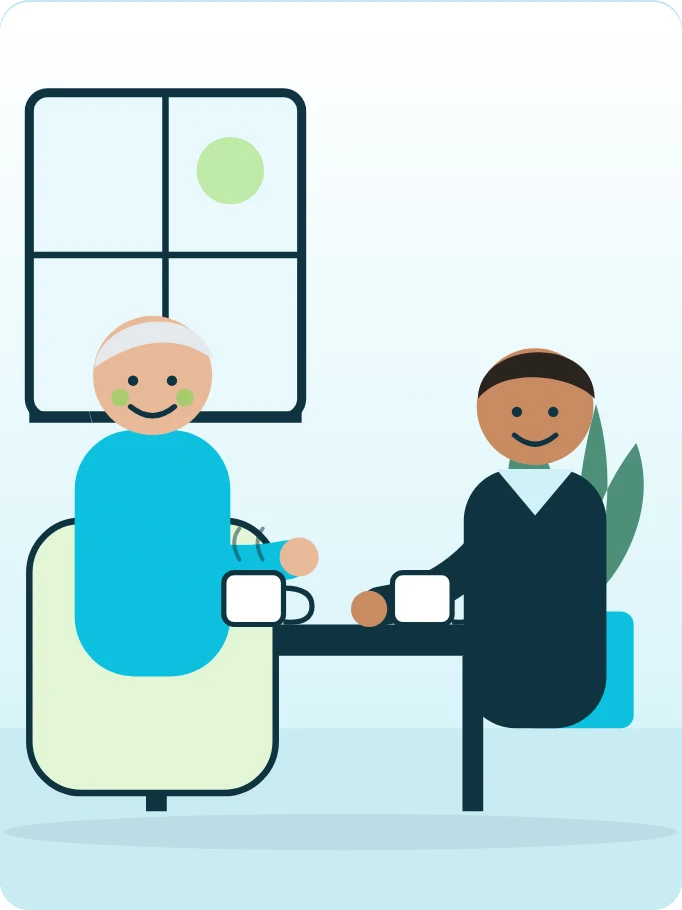
- Audience
- New care workers in residential, memory support, home care and respite
- Format
- Blended onboarding: custom HTML course on the series template, plus on-shift practice with a buddy
- Structure
- 20 screens in four stages, about 3 hours online across 30 days
- Standards
- Aged Care Act 2024 · Statement of Rights · Code of Conduct for Aged Care · SIRS
- Accessibility
- Keyboard navigation, captions and transcripts, reduced motion, progress saved on the device
My role
What I did on this project
Workplace project, built for an organisation’s internal staff.
Challenge & context
New care workers are often on the floor within days. Many bring real caring experience but no sector training, and compliance topics such as the Code of Conduct and serious incident reporting usually arrive as slides that change nothing on shift.
Instructional strategy
Twenty short screens of five to fifteen minutes, released over 30 days in four stages. Every screen ends with one thing to try on the next shift with a buddy, and three check-ins turn the online work into observed practice.
Content & compliance
Built around the Aged Care Act 2024 and its Statement of Rights, the Code of Conduct for Aged Care, the Serious Incident Response Scheme, ISBAR escalation, and the Quality Standard on food, nutrition and safe swallowing.
Interactive features
Tabs, flip cards, accordions, sorting, two image hotspots, step-by-step processes, branching conversations with slots for AI role-play, storyboarded video scenes, buddy and supervisor rubrics, a six-question quiz and a 30-day record. An Author view labels the template block behind every screen.
Interface
Screens from the built course. Select any screen to enlarge it.
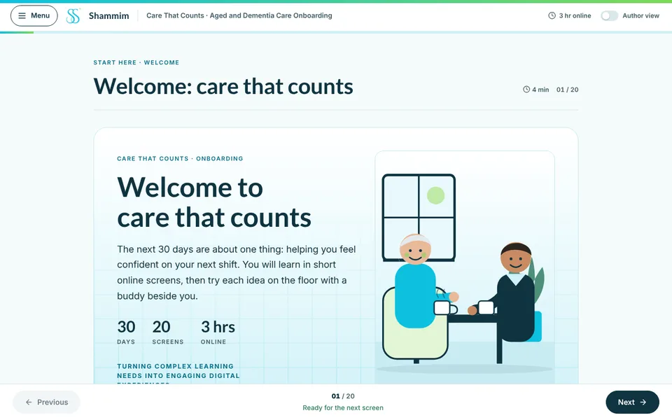
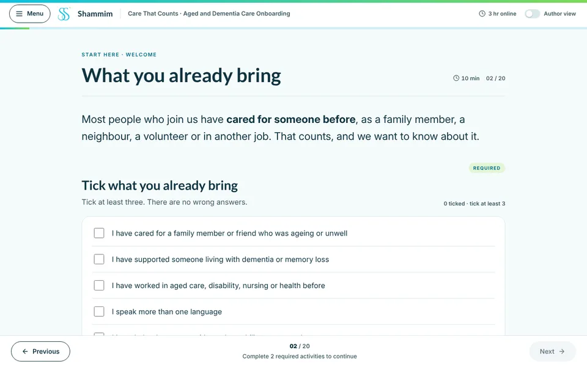
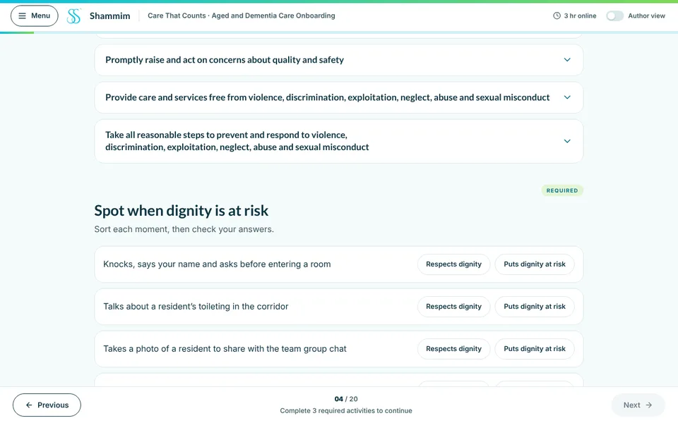
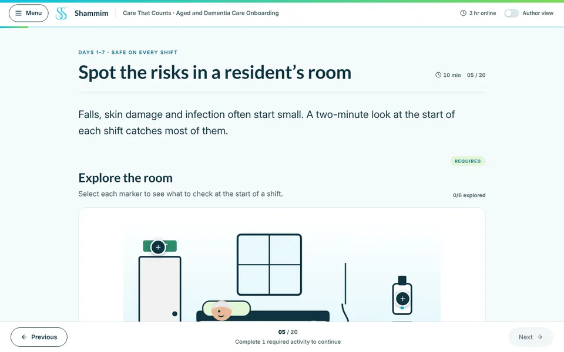
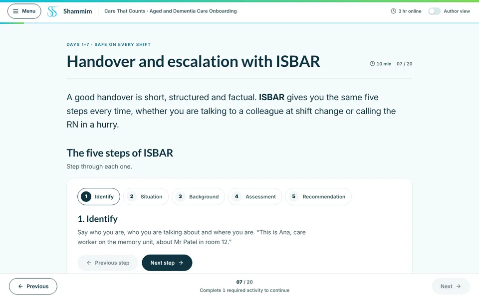
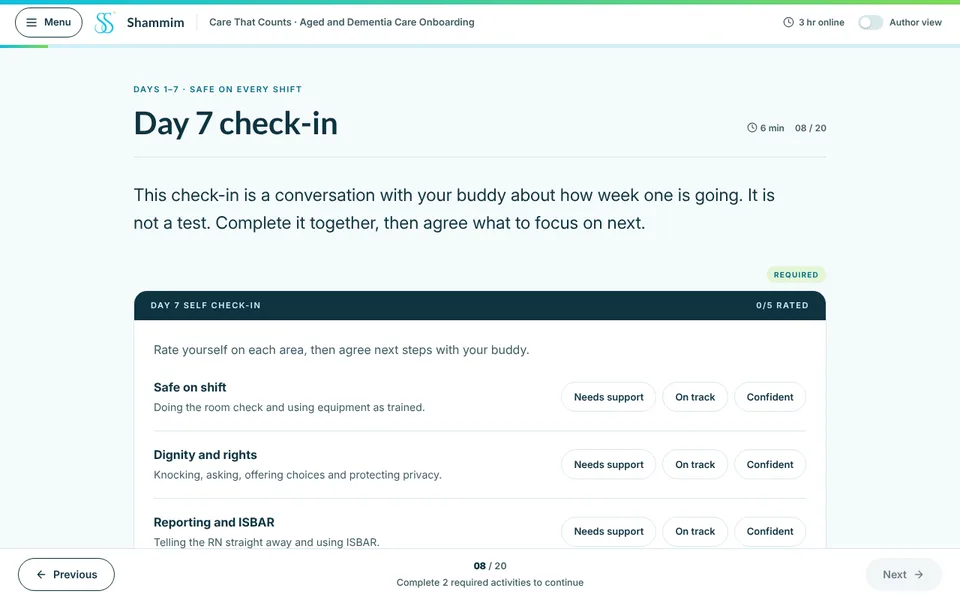
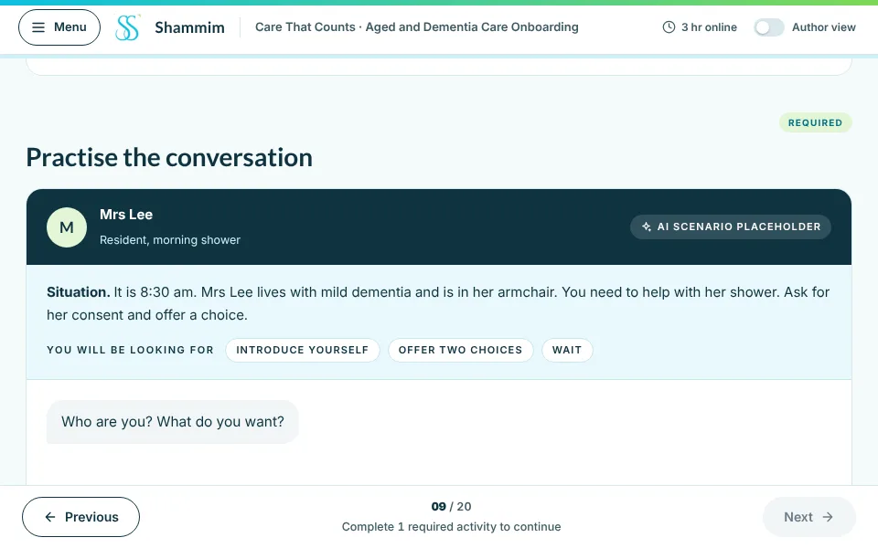
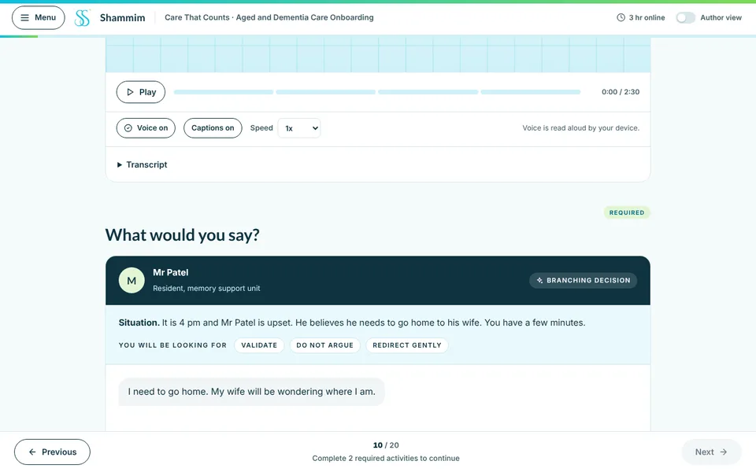
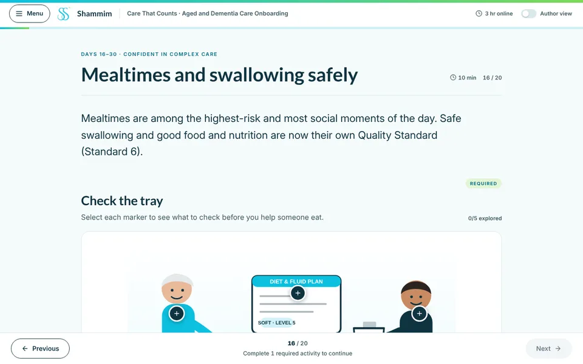
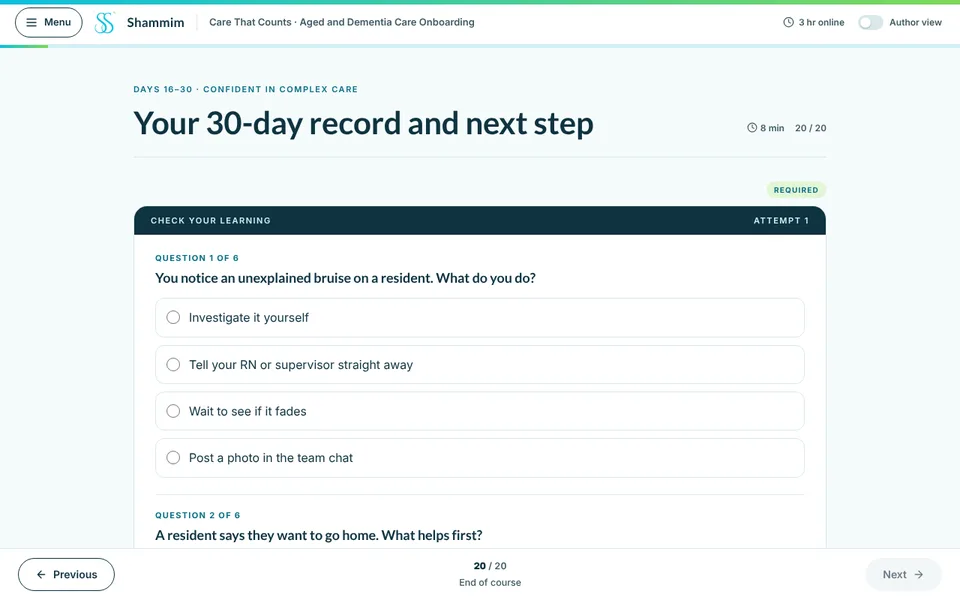